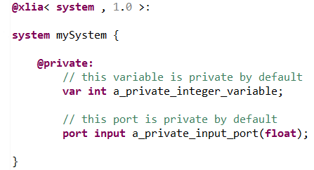

The "@private" section is a section used to declare properties within and belonging to a parent machine.
For generalities about properties declaration please refer to the "@property" section documentation.
When declaring properties within the "@private" section, we can't use visibility modifiers.
All properties that are defined within the "@private" section have the same visibility modifier which is "private".
